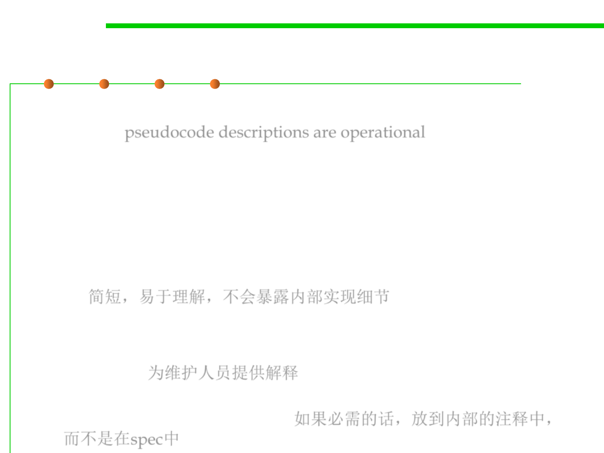

Declarative vs. operational specs
3.2 Designing Specification
▪ Operational specifications give a series of steps that the method
performs; pseudocode descriptions are operational.
▪ Declarative specifications don’t give details of intermediate steps.
Instead, they just give properties of the final outcome, and how it’s
related to the initial state.
▪ Declarative specifications are preferable.
– They’re usually shorter, easier to understand, and most importantly, they
don’t inadvertently expose implementation details that a client may rely
on. 简短，易于理解，不会暴露内部实现细节
▪ Why operational spec. exists?
– Programmers use the spec comment to explain the implementation for a
maintainer. 为维护人员提供解释
– Don’t do that. When it’s necessary, use comments within the body of the
method, not in the spec comment. 如果必需的话，放到内部的注释中，
而不是在spec中